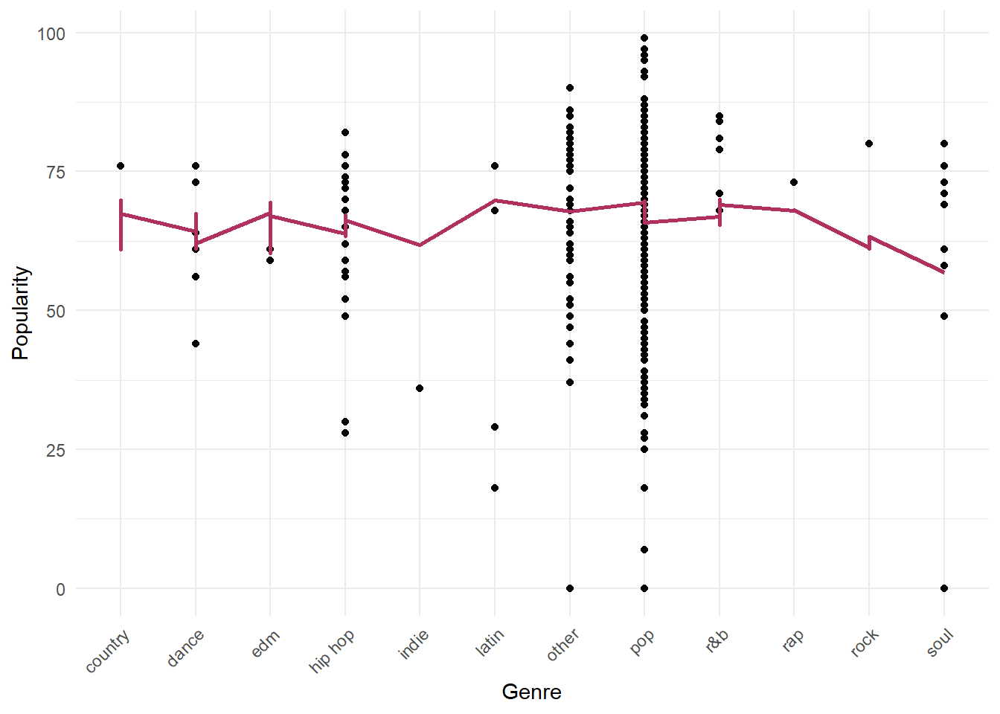

Code
knitr::opts_chunk$set(echo = TRUE)knitr::opts_chunk$set(echo = TRUE)library(readxl)
library(tidyverse)Warning: package 'ggplot2' was built under R version 4.2.3Warning: package 'tibble' was built under R version 4.2.3Warning: package 'dplyr' was built under R version 4.2.3── Attaching core tidyverse packages ──────────────────────── tidyverse 2.0.0 ──
✔ dplyr 1.1.2 ✔ readr 2.1.4
✔ forcats 1.0.0 ✔ stringr 1.5.0
✔ ggplot2 3.4.2 ✔ tibble 3.2.1
✔ lubridate 1.9.2 ✔ tidyr 1.3.0
✔ purrr 1.0.1
── Conflicts ────────────────────────────────────────── tidyverse_conflicts() ──
✖ dplyr::filter() masks stats::filter()
✖ dplyr::lag() masks stats::lag()
ℹ Use the conflicted package (<http://conflicted.r-lib.org/>) to force all conflicts to become errorslibrary(lubridate)
library(ggplot2)
library(stringr)
library(readr)
library(cluster)
library(dplyr)
library(AER)Warning: package 'AER' was built under R version 4.2.3Loading required package: carWarning: package 'car' was built under R version 4.2.3Loading required package: carDataWarning: package 'carData' was built under R version 4.2.3
Attaching package: 'car'
The following object is masked from 'package:dplyr':
recode
The following object is masked from 'package:purrr':
some
Loading required package: lmtestWarning: package 'lmtest' was built under R version 4.2.3Loading required package: zooWarning: package 'zoo' was built under R version 4.2.3
Attaching package: 'zoo'
The following objects are masked from 'package:base':
as.Date, as.Date.numeric
Loading required package: sandwichWarning: package 'sandwich' was built under R version 4.2.3Loading required package: survivallibrary(caret)Warning: package 'caret' was built under R version 4.2.3Loading required package: lattice
Attaching package: 'caret'
The following object is masked from 'package:survival':
cluster
The following object is masked from 'package:purrr':
liftlibrary(dummy)dummy 0.1.3
dummyNews()library(stargazer)
Please cite as:
Hlavac, Marek (2022). stargazer: Well-Formatted Regression and Summary Statistics Tables.
R package version 5.2.3. https://CRAN.R-project.org/package=stargazer library(glmnet)Warning: package 'glmnet' was built under R version 4.2.3Loading required package: Matrix
Attaching package: 'Matrix'
The following objects are masked from 'package:tidyr':
expand, pack, unpack
Loaded glmnet 4.1-7library(car)
library(lmtest)
library(sandwich)
knitr::opts_chunk$set(echo = TRUE)# Read in dataset
top10s <- read_csv("C:/Users/Bryn Kruzlic/OneDrive/Desktop/MS_DACSS/DACSS603/top10s.csv")New names:
Rows: 603 Columns: 15
── Column specification
──────────────────────────────────────────────────────── Delimiter: "," chr
(3): title, artist, top genre dbl (12): ...1, year, bpm, nrgy, dnce, dB, live,
val, dur, acous, spch, pop
ℹ Use `spec()` to retrieve the full column specification for this data. ℹ
Specify the column types or set `show_col_types = FALSE` to quiet this message.
• `` -> `...1`View(top10s)# Filtering NAs from the dataset
top10s %>%
select_all() %>%
filter(bpm == 0 |
nrgy == 0 |
dnce == 0 |
dB == 0 |
live == 0 |
dur == 0 |
spch == 0 |
pop == 0 )# A tibble: 5 × 15
...1 title artist `top genre` year bpm nrgy dnce dB live val dur
<dbl> <chr> <chr> <chr> <dbl> <dbl> <dbl> <dbl> <dbl> <dbl> <dbl> <dbl>
1 51 Hello Marti… big room 2010 128 98 67 -3 10 45 191
2 139 Blow… P!nk dance pop 2012 114 92 60 -3 25 75 256
3 268 Not … Justi… dance pop 2014 86 73 59 -6 38 46 266
4 363 L.A.… Fergie dance pop 2015 202 39 48 -8 26 27 193
5 443 Mill… Adele british so… 2016 0 0 0 -60 0 0 227
# ℹ 3 more variables: acous <dbl>, spch <dbl>, pop <dbl>summary(top10s) ...1 title artist top genre
Min. : 1.0 Length:603 Length:603 Length:603
1st Qu.:151.5 Class :character Class :character Class :character
Median :302.0 Mode :character Mode :character Mode :character
Mean :302.0
3rd Qu.:452.5
Max. :603.0
year bpm nrgy dnce
Min. :2010 Min. : 0.0 Min. : 0.0 Min. : 0.00
1st Qu.:2013 1st Qu.:100.0 1st Qu.:61.0 1st Qu.:57.00
Median :2015 Median :120.0 Median :74.0 Median :66.00
Mean :2015 Mean :118.5 Mean :70.5 Mean :64.38
3rd Qu.:2017 3rd Qu.:129.0 3rd Qu.:82.0 3rd Qu.:73.00
Max. :2019 Max. :206.0 Max. :98.0 Max. :97.00
dB live val dur
Min. :-60.000 Min. : 0.00 Min. : 0.00 Min. :134.0
1st Qu.: -6.000 1st Qu.: 9.00 1st Qu.:35.00 1st Qu.:202.0
Median : -5.000 Median :12.00 Median :52.00 Median :221.0
Mean : -5.579 Mean :17.77 Mean :52.23 Mean :224.7
3rd Qu.: -4.000 3rd Qu.:24.00 3rd Qu.:69.00 3rd Qu.:239.5
Max. : -2.000 Max. :74.00 Max. :98.00 Max. :424.0
acous spch pop
Min. : 0.00 Min. : 0.000 Min. : 0.00
1st Qu.: 2.00 1st Qu.: 4.000 1st Qu.:60.00
Median : 6.00 Median : 5.000 Median :69.00
Mean :14.33 Mean : 8.358 Mean :66.52
3rd Qu.:17.00 3rd Qu.: 9.000 3rd Qu.:76.00
Max. :99.00 Max. :48.000 Max. :99.00 # Repeated in the chart due to seperate releases
top10s <- top10s %>%
filter(title != 'The Hills' | year != 2016)# Merging subgenres together for more cohesion
genre <- top10s["top genre"]
unique(top10s$'top genre') [1] "neo mellow" "detroit hip hop"
[3] "dance pop" "pop"
[5] "canadian pop" "hip pop"
[7] "barbadian pop" "atl hip hop"
[9] "australian pop" "indie pop"
[11] "art pop" "colombian pop"
[13] "big room" "british soul"
[15] "chicago rap" "acoustic pop"
[17] "permanent wave" "boy band"
[19] "baroque pop" "celtic rock"
[21] "electro" "complextro"
[23] "canadian hip hop" "candy pop"
[25] "alaska indie" "folk-pop"
[27] "metropopolis" "house"
[29] "australian hip hop" "electropop"
[31] "australian dance" "hollywood"
[33] "canadian contemporary r&b" "irish singer-songwriter"
[35] "tropical house" "belgian edm"
[37] "french indie pop" "hip hop"
[39] "danish pop" "latin"
[41] "canadian latin" "electronic trap"
[43] "edm" "electro house"
[45] "downtempo" "brostep"
[47] "contemporary country" "moroccan pop"
[49] "escape room" "alternative r&b" top10s <-top10s%>%separate((`top genre`),c("variable","genre"),extra='merge')Warning: Expected 2 pieces. Missing pieces filled with `NA` in 97 rows [5, 12, 24, 55,
58, 60, 65, 106, 108, 110, 114, 118, 119, 138, 148, 150, 153, 155, 163, 168,
...].other <- c("complextro", "downtempo", "brostep", "electro", "electronic", "escape", "folk-pop", "hollywood", "house", "irish", "permanent", "neo", "metropolis", "tropical")
top10s$genre[top10s$variable %in% other] <- 'other'
top10s$genre[top10s$variable == 'hip'] <- 'hip hop'
top10s$genre[top10s$variable == 'latin'] <- 'latin'
top10s$genre[top10s$variable == 'boy'] <- 'pop'
top10s$genre[top10s$variable == 'french'] <- 'pop'
top10s$genre[top10s$variable == 'electropop'] <- 'pop'
top10s$genre[top10s$variable == 'pop'] <- 'pop'
top10s$genre[top10s$genre == 'contemporary r&b'] <- 'r&b'
top10s$genre[top10s$genre == 'room'] <- 'other'
table(top10s$genre)
country dance edm hip hop indie latin other pop r&b rap
1 6 2 20 1 5 46 493 9 1
rock soul
1 11 miss <- colSums(is.na(top10s))
print(miss[miss>0])genre
6 top10s <-na.omit(top10s)pop_artist <- top10s%>%arrange(desc(pop))%>%group_by(artist)
pop_artist# A tibble: 596 × 16
# Groups: artist [181]
...1 title artist variable genre year bpm nrgy dnce dB live val
<dbl> <chr> <chr> <chr> <chr> <dbl> <dbl> <dbl> <dbl> <dbl> <dbl> <dbl>
1 573 "Memor… Maroo… pop pop 2019 91 32 76 -7 8 57
2 574 "Lose … Selen… dance pop 2019 102 34 51 -9 21 9
3 575 "Someo… Lewis… pop pop 2019 110 41 50 -6 11 45
4 576 "Se\xf… Shawn… canadian pop 2019 117 54 76 -6 9 75
5 577 "How D… Sam S… pop pop 2019 111 68 48 -5 8 35
6 578 "South… Ed Sh… pop pop 2019 98 62 86 -6 9 67
7 579 "Tramp… SHAED electro… pop 2019 127 46 62 -6 14 50
8 580 "Happi… Marsh… brostep other 2019 100 79 69 -3 17 67
9 581 "Truth… Lizzo escape other 2019 158 62 72 -3 12 41
10 582 "Good … Lizzo escape other 2019 96 89 67 -3 74 48
# ℹ 586 more rows
# ℹ 4 more variables: dur <dbl>, acous <dbl>, spch <dbl>, pop <dbl>top_artist<-top10s%>%
group_by(`year`)%>%
count(artist)%>%
mutate(prop=n/sum(n))
most_popular_artist <- top10s %>%
group_by(artist) %>%
summarize(no.of.songs = n()) %>%
arrange(desc(no.of.songs))
summarized_songs_artist <- most_popular_artist %>%
slice_max(no.of.songs,n=15)
view(summarized_songs_artist)
most_popular_artist <- pop_artist%>%count(artist)%>%arrange(desc(n))
most_popular_artist%>%head(15)%>%ggplot(aes(x=reorder(artist,n),y=n))+geom_col(fill="skyblue")+ggtitle("15 Most Popular Artists")+coord_flip()duration <-top10s%>%ggplot(aes(x=reorder(genre,dur),y=dur))+geom_boxplot(fill="limegreen")+ggtitle("Song Duration")+theme_light()
duration
duration <- top10s %>%
ggplot(aes(x = reorder(genre, dur), y = dur)) +
geom_point() +
ggtitle("Song Duration") +
xlab("Genre") +
ylab("Duration") +
theme_light() +
theme(axis.text.x = element_text(angle = 45, hjust = 1, vjust = 1.2)) +
geom_point(color = "darkgreen")
duration
summarized_data_genre <- top10s %>%
group_by(genre) %>%
summarize(avg_duration = mean(dur)) %>%
arrange(desc(avg_duration))
View(summarized_data_genre)
colnames(summarized_data_genre) <- c("Song Genre", "Average Song Duration")
view(dur_genre)Error in view(dur_genre): object 'dur_genre' not foundmax_pop <-top10s%>%filter(pop>=60)%>%select(artist,pop,title,genre)%>%arrange(desc(pop))
max_pop# A tibble: 448 × 4
artist pop title genre
<chr> <dbl> <chr> <chr>
1 Maroon 5 99 "Memories" pop
2 Selena Gomez 97 "Lose You To Love Me" pop
3 Lewis Capaldi 96 "Someone You Loved" pop
4 Shawn Mendes 95 "Se\xf1orita" pop
5 Sam Smith 93 "How Do You Sleep?" pop
6 Ed Sheeran 92 "South of the Border (feat. Camila Cabello & Cardi… pop
7 SHAED 92 "Trampoline (with ZAYN)" pop
8 Marshmello 90 "Happier" other
9 Lizzo 90 "Truth Hurts" other
10 Lizzo 90 "Good as Hell (feat. Ariana Grande) - Remix" other
# ℹ 438 more rowsmin_pop <-top10s%>%filter(pop<=59)%>%select(artist,pop,title,genre)%>%arrange(desc(pop))
min_pop# A tibble: 148 × 4
artist pop title genre
<chr> <dbl> <chr> <chr>
1 Adam Lambert 59 If I Had You pop
2 The Black Eyed Peas 59 Rock That Body pop
3 Britney Spears 59 Hold It Against Me pop
4 Jennifer Lopez 59 I'm Into You pop
5 Pitbull 59 Don't Stop the Party (feat. TJR) pop
6 Alicia Keys 59 Girl On Fire (feat. Nicki Minaj) - Inferno V… hip …
7 Pharrell Williams 59 Come Get It Bae pop
8 Lost Frequencies 59 Reality (feat. Janieck Devy) - Radio Edit edm
9 Fifth Harmony 59 Angel pop
10 Little Mix 59 Touch (feat. Kid Ink) pop
# ℹ 138 more rowsmax_pop_threshold <- quantile(top10s$pop, 0.9)
min_pop_threshold <- quantile(top10s$pop, 0.1)
ggplot(top10s, aes(x = genre, y = pop, color = ifelse(pop >= max_pop_threshold, "Max Popularity", ifelse(pop <= min_pop_threshold, "Min Popularity", "Intermediate")))) +
geom_point() +
labs(x = "Song Genre", y = "Popularity", color = "Popularity Level by Genre") +
scale_color_manual(values = c("Max Popularity" = "green", "Min Popularity" = "red", "Intermediate" = "blue")) +
theme_minimal() +
scale_x_discrete(expand = c(0.5, 0.5)) +
theme(axis.text.x = element_text(angle = 45, hjust = 1))
var1_pdf <- prop.table(table(top10s$genre))
var1_cdf <- cumsum(var1_pdf)
var1_pdf_cdf <- data.frame(Genre = names(var1_pdf), Probability = var1_pdf, Cumulative = var1_cdf)
print(var1_pdf_cdf) Genre Probability.Var1 Probability.Freq Cumulative
country country country 0.001677852 0.001677852
dance dance dance 0.010067114 0.011744966
edm edm edm 0.003355705 0.015100671
hip hop hip hop hip hop 0.033557047 0.048657718
indie indie indie 0.001677852 0.050335570
latin latin latin 0.008389262 0.058724832
other other other 0.077181208 0.135906040
pop pop pop 0.827181208 0.963087248
r&b r&b r&b 0.015100671 0.978187919
rap rap rap 0.001677852 0.979865772
rock rock rock 0.001677852 0.981543624
soul soul soul 0.018456376 1.000000000var2_pdf <- density(top10s$dur)
var2_pdf <- prop.table(table(top10s$dur))
var2_cdf <- cumsum(top10s$dur)
var2_pdf <- prop.table(table(top10s$dur))
var2_cdf <- cumsum(var2_pdf)
var2_pdf_cdf <- data.frame(Duration = unique(top10s$dur),
Probability = var2_pdf,
Cumulative = var2_cdf)
tibble(var2_pdf_cdf)# A tibble: 144 × 4
Duration Probability.Var1 Probability.Freq Cumulative
<dbl> <fct> <dbl> <dbl>
1 217 134 0.00168 0.00168
2 263 148 0.00168 0.00336
3 200 157 0.00168 0.00503
4 295 158 0.00168 0.00671
5 221 159 0.00336 0.0101
6 214 160 0.00168 0.0117
7 203 162 0.00168 0.0134
8 225 164 0.00168 0.0151
9 216 166 0.00168 0.0168
10 235 169 0.00336 0.0201
# ℹ 134 more rows# naming the variables
genre_mapping <- unique(top10s$genre)
variable_1 <- as.numeric(factor(top10s$genre, levels = genre_mapping))
view(variable_1) # genre of the popular songs
variable_2 <- top10s$dur # duration of the popular songs
variable_3 <- top10s$pop # popularity score of songs; used for omitted variable bias
top10s$variable_1 <- variable_1
top10s$variable_2 <- variable_2
# mean and standard deviations
mean(variable_1)[1] 3.092282sd(variable_1)[1] 1.427182mean(variable_2)[1] 224.745sd(variable_2)[1] 34.26896mean(variable_3)[1] 66.38255sd(variable_3)[1] 14.53045standard_errors <- aggregate(dur ~ genre, data = top10s, FUN = function(x) sd(x) / sqrt(length(x)))
sufficient_observations <- aggregate(dur ~ genre, data = top10s, FUN = function(x) length(x) >= 2)
genre_proportions <- prop.table(table(top10s$genre))
genre_sample_sizes <- as.integer(table(top10s$genre))average_duration <- aggregate(dur ~ genre, data = top10s, FUN = mean)
barplot(average_duration$dur, names.arg = average_duration$genre, xlab = "Genre", ylab = "Duration", main = "Average Duration by Genre", col = "steelblue")
top10s$dur <- as.numeric(top10s$dur)
missing_values <- is.na(top10s$dur)
subset_data <- top10s[!missing_values, ]
barplot(table(top10s$genre, useNA = "ifany"), beside = TRUE, col = "lightgray", xlab = "Genre", ylab = "Count", main = "Top 10s - Genre Distribution")
boxplot(dur ~ genre, data = top10s, col = "maroon", xlab = "Genre", ylab = "Duration", abline(h = median(top10s$dur), col = "blue", lwd = 2, lty = 2), main = "Top 10s - Duration by Genre")
bpm_pop <- top10s%>%ggplot(aes(x=bpm,y=pop))+geom_point()+ggtitle("BPM/Popularity")+theme_minimal()+geom_smooth(se=FALSE)
bpm_pop`geom_smooth()` using method = 'loess' and formula = 'y ~ x'
cor(top10s$bpm, top10s$pop)[1] 0.02314881dur_pop <- top10s%>%ggplot(aes(x=dur,y=pop))+geom_point()+ggtitle("Duration/Popularity")+theme_minimal()+geom_smooth(se=FALSE)
dur_pop`geom_smooth()` using method = 'loess' and formula = 'y ~ x'cor(top10s$dur, top10s$pop)[1] -0.1056947genre_pop <- top10s%>%ggplot(aes(x=variable_1,y=pop))+geom_point()+ggtitle("Genre/Popularity")+theme_minimal()+geom_smooth(se=FALSE)
genre_pop`geom_smooth()` using method = 'loess' and formula = 'y ~ x'Warning in simpleLoess(y, x, w, span, degree = degree, parametric = parametric,
: pseudoinverse used at 0.945Warning in simpleLoess(y, x, w, span, degree = degree, parametric = parametric,
: neighborhood radius 2.055Warning in simpleLoess(y, x, w, span, degree = degree, parametric = parametric,
: reciprocal condition number 4.4549e-16Warning in simpleLoess(y, x, w, span, degree = degree, parametric = parametric,
: There are other near singularities as well. 1Warning in simpleLoess(y, x, w, span, degree = degree, parametric = parametric,
: zero-width neighborhood. make span biggerWarning: Computation failed in `stat_smooth()`
Caused by error in `predLoess()`:
! NA/NaN/Inf in foreign function call (arg 5)cor(top10s$variable_1, top10s$pop)[1] -0.01021489model_genre <- lm(pop ~ genre, data = top10s)
model_dur <- lm(pop ~ dur, data = top10s)
model_1 <- lm(pop ~ variable_1 + variable_2, data = top10s) #multiple regression model
summary(model_1)$coef Estimate Std. Error t value Pr(>|t|)
(Intercept) 76.94574192 4.18664674 18.3788475 4.801203e-60
variable_1 -0.14312546 0.41598167 -0.3440667 7.309181e-01
variable_2 -0.04503152 0.01732417 -2.5993458 9.572657e-03model_2 <- lm(pop ~ log(variable_1) + log(variable_2), data = top10s) # log-linear model
summary(model_2)$coef Estimate Std. Error t value Pr(>|t|)
(Intercept) 124.1855261 22.308875 5.5666423 3.938166e-08
log(variable_1) -0.3867623 1.527494 -0.2532006 8.002009e-01
log(variable_2) -10.6205119 4.109617 -2.5843067 9.995379e-03model_3 <- lm(pop ~ I(variable_1) + I(variable_2) + I(variable_1^2) + I(variable_2^2) + I(variable_1^3) + I(variable_2^3), data = top10s) # high order polynomial
summary(model_3)$coef Estimate Std. Error t value Pr(>|t|)
(Intercept) 6.348489e+01 5.489305e+01 1.1565198 0.2479375
I(variable_1) -2.408607e+00 2.932493e+00 -0.8213513 0.4117785
I(variable_2) 1.506765e-01 6.501551e-01 0.2317547 0.8168091
I(variable_1^2) 7.025044e-01 6.774892e-01 1.0369234 0.3001971
I(variable_2^2) -8.068174e-04 2.486779e-03 -0.3244427 0.7457181
I(variable_1^3) -4.945496e-02 4.340270e-02 -1.1394442 0.2549811
I(variable_2^3) 1.060373e-06 3.078065e-06 0.3444935 0.7305982#Attempting again to omit NA values
top10s <- na.omit(top10s)
top10s$genre <- na.omit(top10s$genre)
variable_1 <- na.omit(variable_1)
variable_2 <- na.omit(variable_2)
model_1 <- na.omit(model_1)
model_2 <- na.omit(model_2)
model_3 <- na.omit(model_3)
data_for_plot <- data.frame(variable_1, variable_2)
data_for_plot <- na.omit(data_for_plot)#Plotting the following observations- Multiple Regression Model
intercept_1 <- coef(model_1)["(Intercept)"]
coef_variable_1 <- coef(model_1)["variable_1"]
coef_variable_2 <- coef(model_1)["variable_2"]
predicted_pop_1 <- intercept_1 + coef_variable_1 * top10s$variable_1 +
coef_variable_2 * top10s$variable_2
ggplot(top10s, aes(x = genre, y = pop)) +
geom_point() +
geom_line(aes(x = variable_1, y = predicted_pop_1), color = "red", size = 3) +
geom_smooth(method = "lm", color = "blue", se = FALSE) +
labs(x = "Genre", y = "Popularity") +
theme_bw() +
theme(axis.text.x = element_text(angle = 45, hjust = 1)) Warning: Using `size` aesthetic for lines was deprecated in ggplot2 3.4.0.
ℹ Please use `linewidth` instead.`geom_smooth()` using formula = 'y ~ x'ggplot(top10s, aes(x = dur, y = pop)) +
geom_point() +
geom_line(aes(x = variable_2, y = predicted_pop_1), color = "red", size = 3) +
geom_smooth(method = "lm", color = "blue", se = FALSE) +
labs(x = "Duration", y = "Popularity") +
theme_bw() +
theme(axis.text.x = element_text(angle = 45, hjust = 1))`geom_smooth()` using formula = 'y ~ x'# Plotting the following observations- OLS Equation
intercept_ols <- coef(model_2)["(Intercept)"]
coef_variable_1 <- coef(model_2)["variable_1"]
coef_variable_2 <- coef(model_2)["variable_2"]
predicted_pop_ols <- intercept_ols + coef_variable_1 * top10s$variable_1 + coef_variable_2 * top10s$variable_2
na.rm = TRUE
ggplot(top10s, aes(x = genre, y = pop)) +
geom_point(pch = 20, col = "green", size = 2.5) +
geom_line(aes(x = variable_1, y = fitted(model_2)), col = "pink", lwd = 2) +
labs(x = "Genre", y = "Popularity") +
theme_minimal() +
theme(axis.text.x = element_text(angle = 45, hjust = 1))ggplot(top10s, aes(x = dur, y = pop)) +
geom_point(pch = 20, col = "green", size = 2.5) +
geom_line(aes(x = variable_2, y = fitted(model_2)), col = "pink", lwd = 2) +
labs(x = "Duration", y = "Popularity") +
theme_minimal() +
theme(axis.text.x = element_text(angle = 45, hjust = 1))# Plotting the following observations- High Order Polynomial
top10s$predicted_pop <- predict(model_3, newdata = top10s)
ggplot(top10s, aes(x = genre, y = pop)) +
geom_point() +
geom_line(aes(x = variable_1, y = predicted_pop), color = "maroon", size = 1) +
labs(x = "Genre", y = "Popularity") +
theme_minimal() +
theme(axis.text.x = element_text(angle = 45, hjust = 1))
ggplot(top10s, aes(x = dur, y = pop)) +
geom_point() +
geom_line(aes(x = variable_2, y = predicted_pop), color = "maroon", size = 1) +
labs(x = "Duration", y = "Popularity") +
theme_minimal() +
theme(axis.text.x = element_text(angle = 45, hjust = 1))#Creating multiple specifications to find best model
top10s_mod1 <- lm(pop ~ variable_1 + I(variable_1^2) + I(variable_1^3), data = top10s)
top10s_mod2 <- lm(pop ~ variable_2 + I(variable_2^2) + I(variable_2^3), data = top10s)
top10s_mod3 <- lm(pop ~ variable_1 + variable_2 + variable_3, data = top10s) # exclude from future manipulations
top10s_mod4 <- lm(pop ~ variable_1 + variable_2 + bpm, data = top10s)# Attempting to mitigate multicollinearity in the previous models
correlation_matrix <- cor(top10s[, c("variable_1", "variable_2")])
print(correlation_matrix) variable_1 variable_2
variable_1 1.00000000 -0.03618429
variable_2 -0.03618429 1.00000000### correlation value of -0.03618429 suggests that the variables are not strongly correlated.
vif_results_1 <- vif(model_1)
vif_results_2 <- vif(model_2)
vif_results_3 <- vif(model_3)
print(vif_results_1)variable_1 variable_2
1.001311 1.001311 print(vif_results_2)log(variable_1) log(variable_2)
1.000437 1.000437 print(vif_results_3) I(variable_1) I(variable_2) I(variable_1^2) I(variable_2^2) I(variable_1^3)
49.56246 1404.61111 359.86366 5140.77194 167.87602
I(variable_2^3)
1247.37702 ### very high variance inflation factor (VIF) for model_3, the higher order polynomial equation, signifying multicollinearity in the model.
tolerance_values_1 <- 1 / vif_results_1
tolerance_values_2 <- 1 / vif_results_2
tolerance_values_3 <- 1 / vif_results_3
print(tolerance_values_1)variable_1 variable_2
0.9986907 0.9986907 print(tolerance_values_2)log(variable_1) log(variable_2)
0.9995633 0.9995633 print(tolerance_values_3) I(variable_1) I(variable_2) I(variable_1^2) I(variable_2^2) I(variable_1^3)
0.0201765606 0.0007119408 0.0027788302 0.0001945233 0.0059567770
I(variable_2^3)
0.0008016822 ### very low (close to 0) score for model_3, signifying multicollinearity in the model.
# Attempting to mitigate multicollinearity in the newest models
correlation_matrix <- cor(top10s[, c("variable_1", "variable_2", "pop", "bpm")])
print(correlation_matrix) variable_1 variable_2 pop bpm
variable_1 1.00000000 -0.03618429 -0.01021489 0.06691989
variable_2 -0.03618429 1.00000000 -0.10569472 -0.03262715
pop -0.01021489 -0.10569472 1.00000000 0.02314881
bpm 0.06691989 -0.03262715 0.02314881 1.00000000### correlation value less than 1 suggest that the variables are not strongly correlated.se_1 <- sqrt(diag(vcovHC(top10s_mod1, type = "HC1")))
se_2 <- sqrt(diag(vcovHC(top10s_mod2, type = "HC1")))
se_3 <- sqrt(diag(vcovHC(top10s_mod3, type = "HC1"))) # 'Y' value of 'pop' within the dataset 'top10s' equates to the third variable and therefore, cannot be used. Warning in summary.lm(x): essentially perfect fit: summary may be unreliablese_4 <- sqrt(diag(vcovHC(top10s_mod4, type = "HC1")))
rob_se <- list(sqrt(diag(vcovHC(top10s_mod1, type = "HC1"))),
sqrt(diag(vcovHC(top10s_mod2, type = "HC1"))),
sqrt(diag(vcovHC(top10s_mod4, type = "HC1"))))
stargazer(top10s_mod1, top10s_mod2, top10s_mod4,
title = "New Models",
type = "latex",
digits = 3,
header = FALSE,
se = rob_se,
object.names = TRUE,
model.numbers = FALSE,
column.labels = c("(i)", "(ii)", "(iiii)"))
\begin{table}[!htbp] \centering
\caption{New Models}
\label{}
\begin{tabular}{@{\extracolsep{5pt}}lccc}
\\[-1.8ex]\hline
\hline \\[-1.8ex]
& \multicolumn{3}{c}{\textit{Dependent variable:}} \\
\cline{2-4}
\\[-1.8ex] & \multicolumn{3}{c}{pop} \\
& (i) & (ii) & (iiii) \\
\\[-1.8ex] & top10s_mod1 & top10s_mod2 & top10s_mod4\\
\hline \\[-1.8ex]
variable\_1 & $-$1.938 & & $-$0.157 \\
& (3.354) & & (0.535) \\
& & & \\
I(variable\_1$\hat{\mkern6mu}$2) & 0.574 & & \\
& (0.794) & & \\
& & & \\
I(variable\_1$\hat{\mkern6mu}$3) & $-$0.041 & & \\
& (0.054) & & \\
& & & \\
variable\_2 & & 0.135 & $-$0.045$^{***}$ \\
& & (0.473) & (0.015) \\
& & & \\
I(variable\_2$\hat{\mkern6mu}$2) & & $-$0.001 & \\
& & (0.002) & \\
& & & \\
I(variable\_2$\hat{\mkern6mu}$3) & & 0.00000 & \\
& & (0.00000) & \\
& & & \\
bpm & & & 0.012 \\
& & & (0.033) \\
& & & \\
Constant & 68.098$^{***}$ & 62.304 & 75.491$^{***}$ \\
& (4.824) & (40.853) & (5.380) \\
& & & \\
\hline \\[-1.8ex]
Observations & 596 & 596 & 596 \\
R$^{2}$ & 0.002 & 0.011 & 0.012 \\
Adjusted R$^{2}$ & $-$0.003 & 0.006 & 0.007 \\
Residual Std. Error (df = 592) & 14.554 & 14.484 & 14.481 \\
F Statistic (df = 3; 592) & 0.358 & 2.274$^{*}$ & 2.356$^{*}$ \\
\hline
\hline \\[-1.8ex]
\textit{Note:} & \multicolumn{3}{r}{$^{*}$p$<$0.1; $^{**}$p$<$0.05; $^{***}$p$<$0.01} \\
\end{tabular}
\end{table} stargazer(top10s_mod1, top10s_mod2, top10s_mod4,
title = "Regression Models",
type = "text",
header = TRUE,
digits = 4,
se = rob_se,
column.labels = c("(i)", "(ii)", "(iiii)"))
Regression Models
===============================================================
Dependent variable:
--------------------------------
pop
(i) (ii) (iiii)
(1) (2) (3)
---------------------------------------------------------------
variable_1 -1.9383 -0.1570
(3.3536) (0.5349)
I(variable_12) 0.5736
(0.7939)
I(variable_13) -0.0405
(0.0536)
variable_2 0.1348 -0.0448***
(0.4729) (0.0155)
I(variable_22) -0.0007
(0.0018)
I(variable_23) 0.000001
(0.000002)
bpm 0.0121
(0.0334)
Constant 68.0979*** 62.3041 75.4906***
(4.8238) (40.8534) (5.3800)
---------------------------------------------------------------
Observations 596 596 596
R2 0.0018 0.0114 0.0118
Adjusted R2 -0.0032 0.0064 0.0068
Residual Std. Error (df = 592) 14.5540 14.4840 14.4810
F Statistic (df = 3; 592) 0.3577 2.2738* 2.3556*
===============================================================
Note: *p<0.1; **p<0.05; ***p<0.01coeftest(top10s_mod1, vcov. = vcovHC, type = "HC1")
t test of coefficients:
Estimate Std. Error t value Pr(>|t|)
(Intercept) 68.097924 4.823789 14.1171 <2e-16 ***
variable_1 -1.938256 3.353584 -0.5780 0.5635
I(variable_1^2) 0.573615 0.793874 0.7226 0.4702
I(variable_1^3) -0.040503 0.053563 -0.7562 0.4498
---
Signif. codes: 0 '***' 0.001 '**' 0.01 '*' 0.05 '.' 0.1 ' ' 1coeftest(top10s_mod2, vcov. = vcovHC, type = "HC1")
t test of coefficients:
Estimate Std. Error t value Pr(>|t|)
(Intercept) 6.2304e+01 4.0853e+01 1.5251 0.1278
variable_2 1.3475e-01 4.7288e-01 0.2850 0.7758
I(variable_2^2) -7.3572e-04 1.7722e-03 -0.4152 0.6782
I(variable_2^3) 9.6901e-07 2.1268e-06 0.4556 0.6488coeftest(top10s_mod4, vcov. = vcovHC, type = "HC1")
t test of coefficients:
Estimate Std. Error t value Pr(>|t|)
(Intercept) 75.490554 5.379970 14.0318 < 2.2e-16 ***
variable_1 -0.157023 0.534907 -0.2936 0.769204
variable_2 -0.044766 0.015478 -2.8921 0.003967 **
bpm 0.012119 0.033433 0.3625 0.717123
---
Signif. codes: 0 '***' 0.001 '**' 0.01 '*' 0.05 '.' 0.1 ' ' 1linearHypothesis(top10s_mod1,
c("variable_1 = 0", "I(variable_1^2) = 0", "I(variable_1^3) = 0"),
vcov. = vcovHC(top10s_mod1, type = "HC1"))Linear hypothesis test
Hypothesis:
variable_1 = 0
I(variable_1^2) = 0
I(variable_1^3) = 0
Model 1: restricted model
Model 2: pop ~ variable_1 + I(variable_1^2) + I(variable_1^3)
Note: Coefficient covariance matrix supplied.
Res.Df Df F Pr(>F)
1 595
2 592 3 0.1985 0.8974linearHypothesis(top10s_mod2,
c("variable_2 = 0", "I(variable_2^2) = 0", "I(variable_2^3) = 0"),
vcov. = vcovHC(top10s_mod2, type = "HC1"))Linear hypothesis test
Hypothesis:
variable_2 = 0
I(variable_2^2) = 0
I(variable_2^3) = 0
Model 1: restricted model
Model 2: pop ~ variable_2 + I(variable_2^2) + I(variable_2^3)
Note: Coefficient covariance matrix supplied.
Res.Df Df F Pr(>F)
1 595
2 592 3 3.6335 0.0128 *
---
Signif. codes: 0 '***' 0.001 '**' 0.01 '*' 0.05 '.' 0.1 ' ' 1linearHypothesis(top10s_mod4,
c("variable_1 = 0", "variable_2 = 0", "bpm = 0"),
vcov. = vcovHC(top10s_mod4, type = "HC1"))Linear hypothesis test
Hypothesis:
variable_1 = 0
variable_2 = 0
bpm = 0
Model 1: restricted model
Model 2: pop ~ variable_1 + variable_2 + bpm
Note: Coefficient covariance matrix supplied.
Res.Df Df F Pr(>F)
1 595
2 592 3 2.8018 0.03925 *
---
Signif. codes: 0 '***' 0.001 '**' 0.01 '*' 0.05 '.' 0.1 ' ' 1A linear model works well with variables that have a directly linear relationship between one another. It can best represent a simple relationship that falls within a straight line, such as the relationship between hours worked and money earned. The ‘line of best fit’ in the case of Spotify chart data would not be best utilized by a linear relationship, as there is too many factors to consider and too many complex patterns that would be wrongfully ignored in a linear example.
The benefit of non-linear models allows for more flexibility within the growth patterns and the visualizations. These non-linear models in my example, consisting both of polynomial regression and OLS models, provide a more accurate fit to the chart data and to the patterns we are able to see. In the case of model_2, the relationship between duration and popularity, there seems to be a negative relationship as shown by the pink line. From this plot, we are able to see the relationship between duration and popularity, in which the most popular songs (rated on a scale of 0 to 100) have a duration that is under 3 minutes. As the duration increases, the chance of the song charting decreases.
Henrique, L. (2019, December 26). Top Spotify songs from 2010-2019 - by Year. Kaggle. https://www.kaggle.com/datasets/leonardopena/top-spotify-songs-from-20102019-by-year
Mermovich, A. (2023, April 28). Spotify Hits (2010-2019) Analytics
Hlavac, Marek (2022). stargazer: Well-Formatted Regression and Summary Statistics Tables. R package version 5.2.3. https://CRAN.R-project.org/package=stargazer